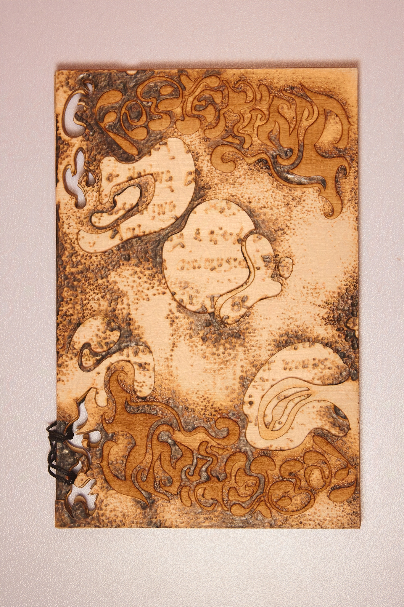

Festering
An abstracted autobiographical investigation of memory through book design and materiality.
Festering is a part of my Book as House series, which are a collection of single edition artist books made from materials associated with residential spaces.
Festering degrades the notion of self actualization through the disintegration of wood. Traditionally, timber has been used to construct the framing of a house. The rings on wood grain not only influence the rigidity of the constructed object, but is a tether from the tree's life. Rendering the wood of the book unfinished exposes it to the elements, making it brittle, swollen, and a distorted version of its past self. The only characteristics that will remain from the original design are the scorched, scarred enscriptions and stippling.
There are moments where I revisit physical and mental spaces, only for it to change over time. While that is a natural thing, these changes have turned for the worse. I constructed Festering as I was away from "home" during my first year of undergrad and was experiencing two types of dread; a fear of returning to a materially unstable environment, a fear of domestic order as clinical. I was happy to not feel the room sway, creek, and crawl as I had in my childhood and adolescent home, but I had gotten so used to the breathing of the house as an entity larger than myself that the currents in the walls became like overhearing an ongoing conversation. These residential spaces have become alive and I was a parasite welcomed by the host. But I as parasite was not welcomed, but lured, so I can soon be sanitized by the harsh, domestic walls.
We are conditioned by our upbringing, our residences, our households. Making something untangible tangible can be a restorative practice. Through this, I aspire to have "home" transform into something I create instead of an unsculptable, permanent space.
Basswood. Fiber Cord. Designed in Adobe Illustrator. Made with ULS Laser Cutter. Embellished with pyrography.